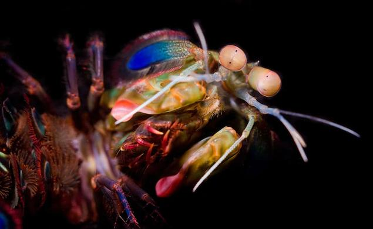
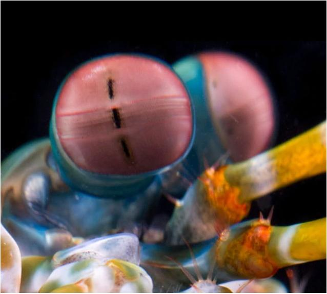

Os olhos mais incríveis da natureza ficaram um pouco mais estranhos
UM CAMARÃO MANTIS DE PAVÃO/STOMATOPODA

Um camarão mantis de pavão
Os olhos são testemunhos da criatividade da evolução. Todos eles fazem
as mesmas coisas básicas - detectam a luz e a convertem em sinais
elétricos - mas de uma variedade tão maravilhosa de maneiras. Existem
olhos simples e compostos, lentes bifocais e rochosas , espelhos e
fibras ópticas . E há olhos que são tão estranhos, tão constantemente
surpreendentes, que depois de décadas de pesquisa, os cientistas mal
descobriram como funcionam, muito menos por que evoluíram dessa maneira.
Para encontrá-los, você precisa dar um mergulho.

Olhos do camarão mantis pavão. As faixas pretas mostram para onde está
Este é o olho de um camarão mantis - um animal marinho que não é um
mantis nem um camarão, mas um parente próximo de caranguejos e lagostas.
É um olho composto, feito de milhares de pequenas unidades que detectam
a luz de forma independente. Aqueles na banda média - a faixa central
que você pode ver na foto - são especiais. São eles que deixam o animal
ver as cores.